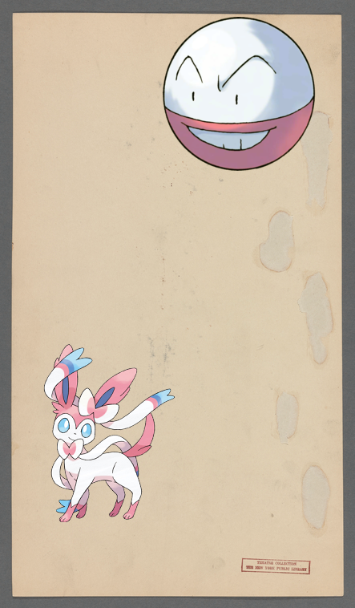

-
 Tyranitar @ Germany, Westphalia, 1807
Tyranitar @ Germany, Westphalia, 1807 -
![Exploud + Letter to Col. [Jonathan] Trumbull http://digitalcollections.nypl.org/items/d9dd1180-c533-012f-8f53-58d385a7bc34](media/finding-BTCKzfXs.png) Exploud + Letter to Col. [Jonathan] Trumbull.
Exploud + Letter to Col. [Jonathan] Trumbull. -
 Piplup @ Rocking Chair Blues.
Piplup @ Rocking Chair Blues. -
![on 259TH ANNIVERSARY [held by] ANCIENT AND HONORABLE ARTILLERY CO. OF MASSACHUSETTS [at]](media/finding-lCaeOVQP.png)
-
 Slurpuff + Capture of cities in the land of Ararat..
Slurpuff + Capture of cities in the land of Ararat.. -
![Machoke @ Queens V. 4, Plate No. 86 [Map bounded by Jamaica Bay, Hollywood Ave., Board Walk, Seaside Ave.]! http://digitalcollections.nypl.org/items/423efab0-c601-012f-5fa4-58d385a7bc34](media/finding-HeJyLkij.png)
-
Servine | New York and Brooklyn!
-
Electrode, Sylveon | Cymbal Dancers-Girls!
-

-
Pangoro + The Hotel Beach Plaza
-

-

-
 Mantine on Denmark, 1835 : Deenske burgerweer en beamten..
Mantine on Denmark, 1835 : Deenske burgerweer en beamten.. -